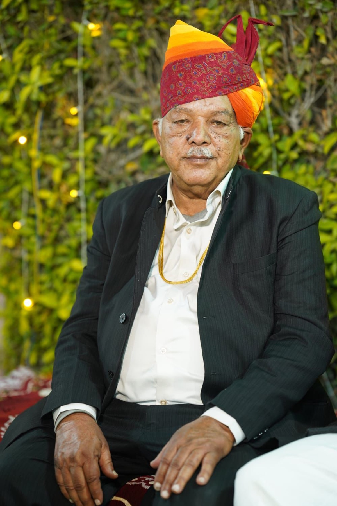

Generation one
Nain Sukh Bhati
The founder whose discipline and ambition established the principles that continue to define the business.
Founder and family legacy
Behind the stone is a family journey. The brand is anchored in the founder's determination and carried forward by the generations that continue to build on his values with discipline and care.
The beginning
The story of N.S. Stone begins with Late Shri Nain Sukh Bhati, whose life was marked by hard work, self-made progress, and a refusal to compromise on values. What began from modest beginnings grew through persistence into a broader business legacy rooted in integrity and effort.
His contribution extended beyond business. He is remembered not only for enterprise, but for a wider sense of duty toward society and future generations. That spirit of responsibility continues to shape how the brand presents itself today.
Three generations
The founder whose discipline and ambition established the principles that continue to define the business.

Continuing the founder's vision with operational stewardship, consistency, and business continuity.
Representing the present direction of the business with a more global, design-aware, and future-facing approach.
What remains constant
Promises matter, especially when material supply affects real projects and real deadlines.
The premium position of the brand depends on consistency of tone, finish, and preparation.
The stone's cultural and geographic identity is treated as an asset, not decoration.
Continue the conversation